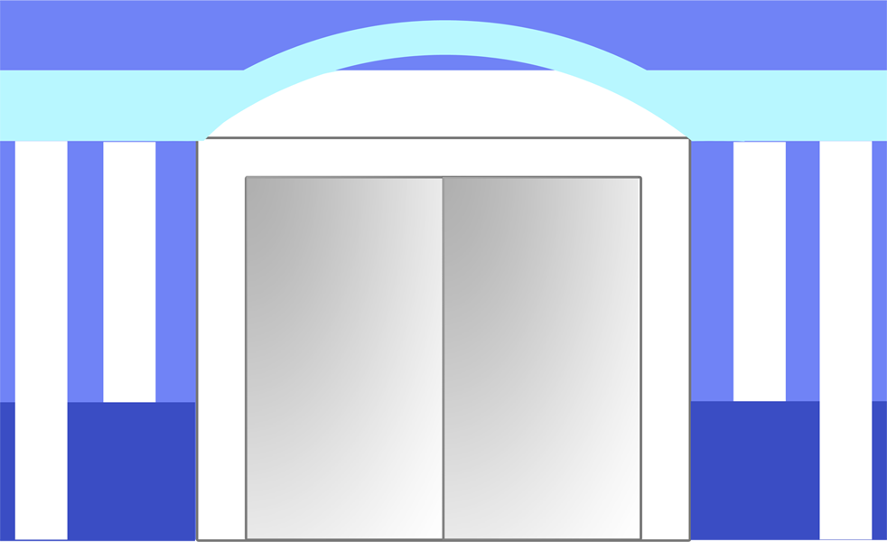

Nida Laili Maghfiroh, lahir di Malang tanggal 7 Maret 1993 bertepatan dengan 13 Romadhon 1413.
Merupakan Putri pertama dari Bapak Bahrul Ulum dan Ibu Nur Fadhilah.
Achmad Afif Hardiyansyah, lahir di Malang tanggal 27 Oktober 1992 bertepatan dengan 1 Jumadil Awal 1413.
Merupakan Putra terakhir dari Bapak Maman Hidayat dan Ibu Masfiah.
Mereka bertemu saat melaksanakan studi di kampus Politeknik Negeri Malang pada tahun 2014
Saat pengerjaan tugas akhir kuliah, Mereka memiliki intensitas pertemuan yang sering untuk mengerjakan tugas bersama. Eits bukan hanya berdua tapi berjama'ah :). Dari situlah mereka mulai lebih mengenal satu sama lain.

Setelah kelulusan, dengan ditemani oleh sahabat Nida, Afif memberanikan diri untuk menyatakan perasaan yang telah lama dipendam kepada Nida. Dengan tujuan baik menjadikan Nida sebagai separuh jiwanya yang halal. Dengan izin Allah niatan baiknya dipermudah Allah untuk mengkhitbah Nida.